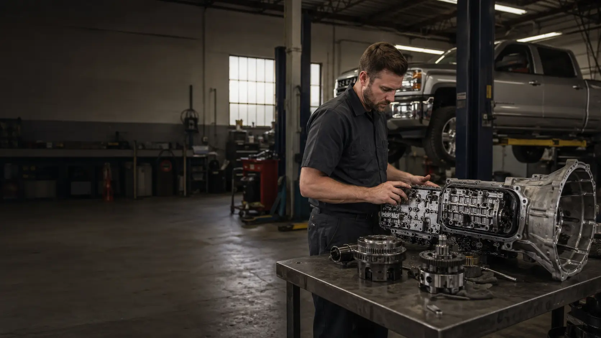

Competitive Installed Pricing
Our transmission sourcing and lean operating model allow us to keep complete transmission repair and replacement pricing highly competitive.

Springfield • Ozark • Rogersville • Nixa • Southwest Missouri
Integrity Transmission & Drivetrain specializes in transmission repair, professional rebuilds, and complete remanufactured transmission replacement. We help you compare the available options and choose the repair that makes the most sense for your vehicle, budget, and long-term reliability.
Fastest Way To Get Pricing
Your VIN is the fastest and most accurate way for us to identify the transmission in your vehicle. If you do not have it handy, send the year, make, model, engine, 2WD or 4WD, and a short description of the problem.
Text VIN or Vehicle DetailsWhy Customers Choose Integrity
Transmission work is expensive, and the most familiar repair option is not always the best value. We compare rebuild and replacement options so you can see what makes sense before committing to a major repair.
Our transmission sourcing and lean operating model allow us to keep complete transmission repair and replacement pricing highly competitive.
On many newer vehicles, a professionally remanufactured transmission may cost only slightly more than rebuilding the original unit.
Qualifying transmission packages may include nationwide warranty coverage ranging from one to three years with unlimited mileage.
Remanufactured Transmission Replacement
Professionally remanufactured transmissions are available for many late-model cars, trucks, SUVs, vans, and commercial vehicles.
A remanufactured transmission is rebuilt through a standardized production process rather than simply replacing the components that failed in one individual unit. Depending on the transmission and supplier, this may include hard-part inspection or replacement, valve-body work, solenoid service, known-failure corrections, updated components, and final testing before shipment.
Get a replacement quoteComplete transmission removal and installation can be included along with required fluid service, supporting work, programming, and adaptive relearn procedures when applicable.
View transmission servicesNewer vehicles can have multiple transmission variations. Using the VIN helps us identify the correct application and quote the right transmission, warranty, and installation package.
Text your VINRebuild vs. Remanufactured Replacement
There is no single answer for every transmission. A quality rebuild can be an excellent repair on many applications, while a professionally remanufactured transmission can offer a broader restoration process, stronger warranty options, and better overall value on many newer vehicles.
Traditional rebuilding starts with your existing transmission. The unit is disassembled and inspected, and worn, damaged, or required components are repaired or replaced according to the build.
A professionally remanufactured transmission typically goes through a more standardized and comprehensive production process. Depending on the supplier and transmission, additional hard parts, hydraulic components, electronics, known weak points, updates, and testing may be included before the unit is released.
Because we can source many remanufactured transmissions competitively, there are situations where the price difference between rebuilding your transmission and installing a remanufactured unit is surprisingly small.
Compare My OptionsNationwide Warranty Options
Qualifying remanufactured transmission packages are available with nationwide warranty options ranging from one to three years with unlimited mileage.
Depending on the specific warranty program, covered failures away from home may include shipment of a replacement transmission to a qualifying repair facility and labor reimbursement for approved warranty repairs.
Real Work. Real Vehicles.
These are real vehicles, transmissions, inspections, failures, rebuilds, and completed jobs. The gallery automatically rotates, and you can open any image for a larger view.


How It Works
We identify the correct transmission, review available rebuild and replacement options, provide the quote and warranty information, then complete the approved repair.
Start My QuoteVIN is preferred. Year, make, model, engine, drivetrain, and symptoms can also be used to begin the quote.
We identify available rebuild, remanufactured replacement, and related repair options for your vehicle.
You receive the price, repair scope, warranty information, and payment requirements before the job moves forward.
The transmission is rebuilt or replaced and installation, fluids, programming, and adaptive relearn are handled when applicable.
Cars • Trucks • SUVs • Vans
Integrity works with domestic and import vehicles across a wide range of transmission families. Each vehicle is evaluated based on transmission availability, parts availability, repairability, warranty, and overall economics.
If a practical repair or replacement option is available, we will help you price it. If we cannot provide a sensible solution for the vehicle, we will tell you before the job moves forward.
View Transmission InformationSelected Automotive Service
Transmission and drivetrain work remain our specialty, but selected routine mechanical repairs and maintenance are also available.
Brake pads, rotors, and selected brake repairs for cars, trucks, SUVs, and vans.
Request a brake quoteSelected steering, suspension, wheel bearing, hub, CV axle, and related bolt-on mechanical repairs.
Request a repair quoteOil changes, fluid service, and selected routine automotive maintenance.
Request serviceCustomer Experience
Transmission work is stressful enough. We work to provide clear communication about pricing, repair options, warranty coverage, and what happens next.
Read Customer ReviewsSouthwest Missouri Transmission Service
Integrity Transmission & Drivetrain provides transmission repair, transmission rebuilds, remanufactured transmission replacement, drivetrain repair, and selected automotive service throughout the Springfield area.
Common Questions
Both. Depending on the vehicle and transmission, we can quote a traditional rebuild, complete remanufactured replacement, or another appropriate repair option.
Yes. Late-model cars, trucks, and SUVs are a major part of our transmission business, and remanufactured replacement transmissions are available for many newer applications.
Yes. Complete removal and installation can be included in your quote, along with fluids, supporting work, programming, and adaptive relearn procedures when applicable.
VIN is preferred because it provides the most accurate vehicle and transmission identification. If you do not have it handy, send the year, make, model, engine, 2WD or 4WD, and symptoms.
Major transmission jobs require expensive transmissions, parts, freight, fluids, and related components. Payment is collected before parts are ordered so we can purchase those items immediately without financing customer repairs. This helps us keep overhead and overall pricing lower.
Qualifying warranty programs can provide coverage outside the local area. Depending on the specific transmission and warranty package, an approved failure may include replacement transmission support and reimbursement to a qualifying repair facility for approved labor. Exact warranty terms are provided with your quote.
Yes. Transmission and drivetrain service remain our specialty, but selected brake, steering, suspension, wheel bearing, axle, and routine maintenance services are also available.
Pricing varies by vehicle, transmission, drivetrain, programming requirements, freight, core charges, fluid requirements, and warranty package. Send us your VIN and we can identify the exact application and build a complete quote.
Need Transmission Pricing?
Whether your vehicle needs a rebuild, a remanufactured replacement, or another transmission repair, start with your VIN and a short description of the problem.